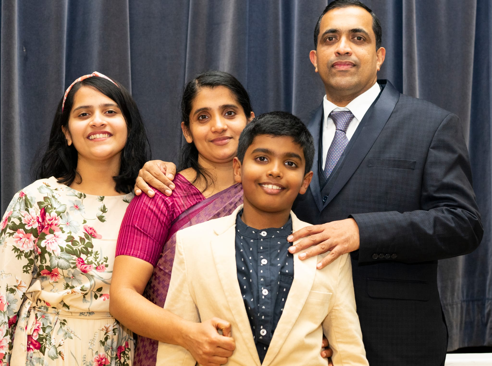

Pastor Hans P Thomas
2022 - presentPastor Hans P Thomas is an ordained Church of God (CoG) minister and has served as church pastor at several churches for the past 17 years. He is the second of 3 children born to Late Pr. K P Thomas and Mrs. Annamma Thomas.
Pastor Hans is married to Alphonsa Varghese and they are blessed with two children, Tabitha Anna Hans and Naithan Thomas Hans.
In June 2022, Pastor Hans accepted the invitation of Manchester Pentecostal Church to take up the role of Church Pastor and President and moved to the UK with his family.
His elder sister Simi Thomas and family are settled in Kuwait and younger brother Jans P Thomas and family are settled in Canada. At the age of twelve, Pastor Hans accepted Jesus Christ as his personal saviour and shortly after took water baptism and was filled with the Holy Spirit. During his college days God enabled Pastor Hans to start a youth ministry called Soldiers for Christ due to his passion to bring souls to Christ. After completing his bachelor's degree (BSc Computer Science & Information Technology), Pastor Hans started his career as an IT Technical Support Analyst in Kuwait. Alongside his secular job, he had a passion for serving the Lord and was involved in church ministry at an independent church (Jesus Disciples Ministry).
During a fasting prayer meeting, Pastor Hans heard the voice of the Lord, to quit his job and serve the Lord as a full-time minister. Heeding to the call of God, he resigned his job and joined New India Bible Seminary (NIBS), Paippad and completed his Masters in Divinity (MDiv). Pastor Hans has taken up assignments as church minister at various churches in Kerala and Kuwait, with his recent tenure being church pastor at Church of God, Mangaf, Kuwait.